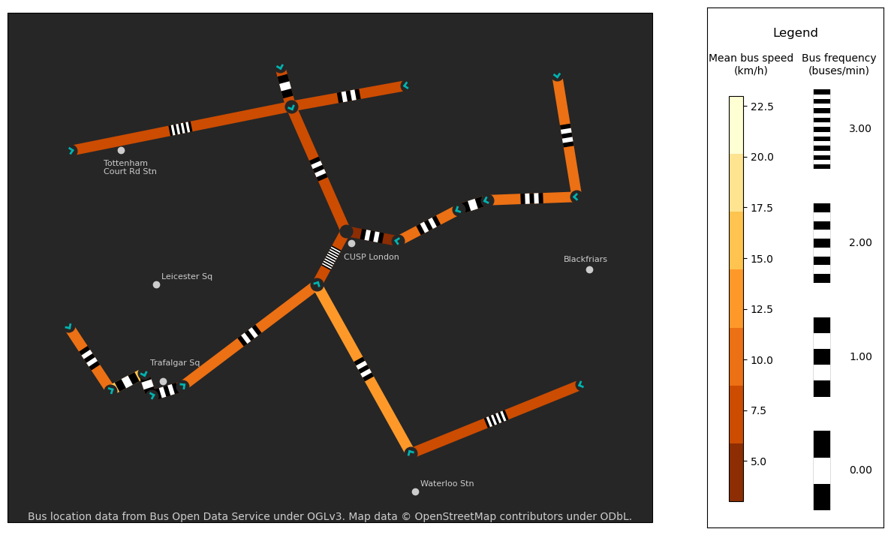

Bus flow on road networks in Central London#
Bus location data from Bus Open Data Service under OGLv3. Map data © OpenStreetMap contributors under ODbL.
[3]:
import pandas as pd
import numpy as np
from vizent.vizent_plot import create_plot, add_lines
from shapely import Point
import cartopy.crs as ccrs
import cartopy.feature as cfeature
import matplotlib as mpl
import warnings
# Filter warnings for gallery image only
warnings.filterwarnings('ignore')
def transform_wsg_to_bng(pnt):
return ccrs.epsg(27700).transform_point(pnt.x,pnt.y,src_crs=4326)
df = pd.read_csv('sample-data/bus-open-data-service-sample-network.csv')
starts = []
ends = []
for x,y in df[['start_lon', 'start_lat']].values:
starts.append(transform_wsg_to_bng(Point(x,y)))
for x,y in df[['end_lon', 'end_lat']].values:
ends.append(transform_wsg_to_bng(Point(x,y)))
x_starts = [start[0] for start in starts]
y_starts = [start[1] for start in starts]
x_ends = [end[0] for end in ends]
y_ends = [end[1] for end in ends]
vizent_fig = create_plot(use_glyphs=False,
use_lines=True,
use_cartopy=True,
cartopy_projection=ccrs.epsg(27700),
extent=[-0.134693, -0.098987, 51.502702, 51.520076],
scale_x=16,
scale_y=9,
show_axes=False)
cmapPlain = mpl.colors.ListedColormap(
list(reversed(['#ffffd4','#fee391','#fec44f','#fe9929',
'#ec7014','#cc4c02','#8c2d04'])))
add_lines(vizent_fig,
x_starts,
y_starts,
x_ends,
y_ends,
df['average_speed'],
df['distinct_journeys'] / 60.0,
width_values=[10 for edge in x_starts],
striped_length=30,
style='set_length',
length_type='pixels',
color_min=3,
color_max=23,
freq_min=0,
freq_max=3,
freq_n = 4,
colormap=cmapPlain,
legend_title='Legend',
color_label='Mean bus speed\n(km/h)',
frequency_label='Bus frequency\n(buses/min)',
label_fontsize=10,
interval_type='limit')
ax = vizent_fig[1]
# Plot stops as an angled triangle in the direction of the next edge
for i in range(len(x_starts)):
dx = [x[0] - y[0] for x,y in zip(ends, starts)][i]
dy = [x[1] - y[1] for x,y in zip(ends, starts)][i]
length = np.sqrt(dx**2 + dy**2)
chevron_size = 10
ax.plot([x_starts[i]], [y_starts[i]], c='0.15', marker='o', markersize=12, zorder=1)
ax.plot([x_starts[i] + (chevron_size / length) * (-dy),
x_starts[i] + (chevron_size / (length)) * dx],
[y_starts[i] + (chevron_size / length) * (dx),
y_starts[i] + (chevron_size / (length)) * dy],
linewidth=2,
color='#00B3B0',
zorder=2)
ax.plot([x_starts[i] + (chevron_size / length) * (dy),
x_starts[i] + (chevron_size / (length)) * (dx)],
[y_starts[i] + (chevron_size / length) * (-dx),
y_starts[i] + (chevron_size / (length)) * (dy)],
linewidth=2,
color='#00B3B0',
zorder=2)
# Plot the terminating stop
terminating_stop = transform_wsg_to_bng(Point(-0.117465, 51.513173))
ax.plot(terminating_stop[0], terminating_stop[1], marker='o', color='0.15',
markersize=12)
#Labels to add:
landmarks = {'Trafalgar Sq': transform_wsg_to_bng(Point(-0.128011,51.508058)),
'CUSP London': transform_wsg_to_bng(Point(-0.117180,51.512735)),
'Waterloo Stn': transform_wsg_to_bng(Point(-0.113930,51.503941)),
'Tottenham\nCourt Rd Stn': transform_wsg_to_bng(Point(-0.130028,51.516224)),
'Blackfriars': transform_wsg_to_bng(Point(-0.103791,51.511590)),
'Leicester Sq': transform_wsg_to_bng(Point(-0.128253,51.511467)),
}
offsets = {'Trafalgar Sq': (-50, 60),
'CUSP London': (-30, -65),
'Waterloo Stn': (20, 20),
'Tottenham\nCourt Rd Stn': (-70, -95),
'Blackfriars': (-100, 30),
'Leicester Sq': (20, 20)
}
for k, v in landmarks.items():
ax.plot(v[0], v[1], color='0.8', marker='o', markersize=6)
ax.annotate(k, xy=(v[0]+offsets[k][0], v[1]+offsets[k][1]), color='0.8', fontsize=8,zorder=1110)
ax.text(0.5, 0.02, "Bus location data from Bus Open Data Service under OGLv3. Map data © OpenStreetMap contributors under ODbL.",
horizontalalignment='center',
verticalalignment='top',
fontsize=10,
transform=ax.transAxes,
color='0.8')
# When using cartopy, we can re-draw the physical earth features to change background color.
ax.add_feature(cfeature.NaturalEarthFeature('physical', 'land', '50m', edgecolor='w', facecolor='0.15', zorder=-1))
vizent_fig[0].show()
